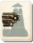

Requires
- Arts: 
Enables
Effects
- +2 to the morale of all units
- +10% to the campaign movement range of armies
Description
Our men stalk the land:
The very mountains tremble.
None stand against us!
When the army is a noble calling for all, when all mothers are proud to see their sons in uniform, and when all children sing patriotic songs, then the cloth of state is woven strongly. A land where this is true will never lack for soldiers to stand upon the ramparts. It will never lack the respect of others. Its ruler's words will be heard in the councils of the world.